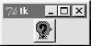
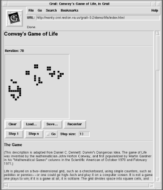

| I l@ve RuBoard |
|
15.5 Grail: A Python-Based Web BrowserI briefly mentioned the Grail browser near the start of Chapter 10. Many of Python's Internet tools date back to and reuse the work that went into Grail, a full-blown Internet web browser that:
As mentioned earlier, Grail was something of a proof-of-concept for using Python to code large-scale Internet applications. It implements all the usual Internet protocols and works much like common browsers such as Netscape and Internet Explorer. Grail pages are implemented with the Tk text widgets that we met in the GUI part of this book. More interestingly, the Grail browser allows applets to be written in Python. Grail applets are simply bits of Python code that live on a server but are run on a client. If an HTML document references a Python class and file that live on a server machine, Grail automatically downloads the Python code over a socket and runs it on the client machine, passing it information about the browser's user interface. The downloaded Python code may use the passed-in browser context information to customize the user interface, add new kinds of widgets to it, and perform arbitrary client-side processing on the local machine. Roughly speaking, Python applets in Grail serve the same purposes as Java applets in common Internet browsers: they perform client-side tasks that are too complex or slow to implement with other technologies such as server-side CGI scripts and generated HTML. 15.5.1 A Simple Grail Applet ExampleWriting Grail applets is remarkably straightforward. In fact, applets are really just Python/Tkinter programs; with a few exceptions, they don't need to "know" about Grail at all. Let's look at a short example; the code in Example 15-6 simply adds a button to the browser, which changes its appearance each time it's pressed (its bitmap is reconfigured in the button callback handler). There are two components to this page definition: an HTML file and the Python applet code it references. As usual, the grail.html HTML file that follows describes how to format the web page when the HTML's URL address is selected in a browser. But here, the APP tag also specifies a Python applet (class) to be run by the browser. By default, the Python module is assumed to have the same name as the class and must be stored in the same location (URL directory) as the HTML file that references it. Additional APP tag options can override the applet's default location. Example 15-6. PP2E\Internet\Other\grail.html<HEAD> <TITLE>Grail Applet Test Page</TITLE> </HEAD> <BODY> <H1>Test an Applet Here!</H1> Click this button! <APP CLASS=Question> </BODY> The applet file referenced by the HTML is a Python script that adds widgets to the Tkinter-based Grail browser. Applets are simply classes in Python modules. When the APP tag is encountered in the HTML, the Grail browser downloads the Question.py source code module (Example 15-7) and makes an instance of its Question class, passing in the browser widget as the master (parent). The master is the hook that lets applets attach new widgets to the browser itself; applets extend the GUI constructed by the HTML in this way. Example 15-7. PP2E\Internet\Other\Question.py# Python applet file: Question.py
# in the same location (URL) as the html file
# that references it; adds widgets to browser;
from Tkinter import *
class Question: # run by grail?
def __init__(self, parent): # parent=browser
self.button = Button(parent,
bitmap='question',
command=self.action)
self.button.pack( )
def action(self):
if self.button['bitmap'] == 'question':
self.button.config(bitmap='questhead')
else:
self.button.config(bitmap='question')
if __name__ == '__main__':
root = Tk( ) # run standalone?
button = Question(root) # parent=Tk: top-level
root.mainloop( )
Notice that nothing in this class is Grail- or Internet-specific; in fact, it can be run (and tested) standalone as a Python/Tkinter program. Figure 15-3 is what it looks like if run standalone on Windows (with a Tk application root object as the master); when run by Grail (with the browser/page object as the master), the button appears as part of the web page instead. Either way, its bitmap changes on each press. Figure 15-3. Running a Grail applet standaloneIn effect, Grail applets are simply Python modules that are linked into HTML pages by using the APP tag. The Grail browser downloads the source code identified by an APP tag and runs it locally on the client during the process of creating the new page. New widgets added to the page (like the button here) may run Python callbacks on the client later, when activated by the user. Applets interact with the user by creating one or more arbitrary Tk widgets. Of course, the previous example is artificial; but notice that the button's callback handler could do anything we can program in Python: updating persistent information, popping up new user interaction dialogs, calling C extensions, etc. However, by working in concert with Python's restricted execution mode (discussed later) applets can be prevented from performing potentially unsafe operations, like opening local files and talking over sockets. Figure 15-4 shows a screen shot of Grail in action, hinting at what's possible with Python code downloaded to and run on a client. It shows the animated "game of life" demo; everything you see here is implemented using Python and the Tkinter GUI interface. To run the demo, you need to install Python with the Tk extension and download the Grail browser to run locally on your machine or copy it off the CD. Then point your browser to a URL where any Grail demo lives. Figure 15-4. A Grail applet demoHaving said all that, I should add that Grail is no longer formally maintained, and is now used primarily for research purposes (Guido never intended for Grail to put Netscape or Microsoft out of business). You can still get it for free (find it at http://www.python.org) and use it for surfing the Web or experimenting with alternative web browser concepts, but it is not the active project it was a few years ago. If you want to code web browser applets in Python, the more common approach today is to use the JPython system described previously to compile your scripts into Java applet bytecode files, and use Java libraries for your scripts' user-interface portions. Embedding Python code in HTML with the Active Scripting extension described later in this chapter is yet another way to integrate client-side code.
|
| I l@ve RuBoard |
|